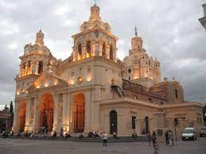

Historia de Córdoba
Córdoba es una ciudad y municipio español en Andalucía, capital de la provincia homónima, situada en una depresión a orillas del Guadalquivir y al pie de Sierra Morena. Alberga una población de 326 039 habitantes en 2020, siendo la tercera ciudad más grande y poblada de Andalucía tras Sevilla y Málaga, y la duodécima de España. Su área metropolitana comprende ocho municipios, con una población de 360 298 habitantes en 2020, la vigésima tercera más poblada de España. Fundada por los romanos durante el siglo ii a. C., se convirtió en la capital de la Hispania Ulterior en tiempos de la República romana, además de la provincia Bética durante el Imperio romano. No obstante, su momento álgido trascurrió durante la dominación musulmana de la península ibérica, cuando se alzó como capital del Emirato de Córdoba, mientras que durante el Califato de Córdoba se convirtió en la ciudad más habitada, culta y opulenta de Europa, así como en un centro líder mundial de la educación. Durante la larga Edad Media europea, en Córdoba florecieron las letras y las ciencias, gestándose las bases del Renacimiento europeo. Abundaron las mezquitas, las bibliotecas, los baños y los zocos, además de contar con multitud de fuentes, iluminación pública y alcantarillado durante la época de mayor esplendor califal.
Córdoba es actualmente la ciudad que más títulos Patrimonio de la Humanidad de la Unesco alberga del mundo. En 1984, la Mezquita-catedral de Córdoba fue incluida en la reputada lista; en 1994 lo haría el casco histórico que la rodea. La Fiesta de los Patios Cordobeses fue designada Patrimonio cultural inmaterial de la Humanidad en diciembre del 2012,11 y en julio de 2018 la ciudad palatina de Medina Azahara, en las afueras del núcleo urbano, fue declarada también Patrimonio de la Humanidad. Tiene uno de los cascos históricos más grandes de Europa, con 246,73 hectáreas con monumentos datados desde época romana.